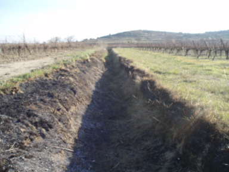
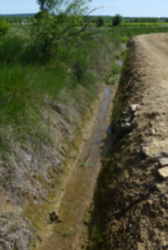

Gérer les fossés
| Intérêts environnementaux | Intérêts agronomiques | Contraintes de mise en oeuvre | Acceptabilité |
|---|---|---|---|
| Rétention et dégradation des pesticides | Gestion des flux d’eau Assainissement agricole Limitation de l’érosion ravinaire |
Temps Soumis à réglementation |
Bonne |
Un fossé est un élément linéaire artificiel de collecte et d’écoulement des eaux (pluie, eaux usées, de ruissellement ou de drainage). Il existe une grande diversité des fossés selon leur morphologie, nature et abondance de la végétation et des litières.
Quelle efficacité sur la réduction des contaminations ?
Les fossés jouent un rôle important pour limiter la contamination de surface et souterraine. Ils peuvent retenir selon leur état et selon les molécules de 3 à 99% de la quantité des molécules circulant dans les fossés. Cette capacité de rétention des fossés contribue à abattre la concentration dans les masses d’eau aval et favorise la dégradation des molécules. Elle peut en revanche provoquer un allongement de la durée de contamination par relargage des quantités de pesticides stockés par le fossé, mais cela s’effectue alors à faible concentration. D’autre part, ils permettent d’évacuer les eaux excédentaires, de lutter contre l’érosion, et participent au maintien de la biodiversité.
Penser la gestion à l’échelle du réseau de fossés et en fonction du contexte
Si la cible à protéger en priorité est :
une masse d’eau de surface (rivière, lac, étangs) : bénéficier de fossés à forte capacité de rétention sur la moitié aval du réseau sera plus efficace que si ces mêmes fossés sont localisés sur les parties amont du bassin.
une masse d’eau souterraine : favoriser les fossés à forte capacité de rétention sur les parties du réseau à la fois les plus infiltrantes et pour lesquelles la nappe est la moins profonde.
une espèce vivant dans les fossés (ex. arthropodes) : favoriser les fossés à forte rétention à proximité immédiate des parcelles les plus émettrices.
Actions complémentaires
D’autres éléments du paysage permettent de tamponner les eaux de surface et peuvent être associés aux fossés pour une meilleure rétention : bandes enherbées ou boisées, zones tampons humides artificielles… Leur possibilité d’implantation et de gestion dépend du contexte pédoclimatique et agronomique. Comme pour les fossés, leur performance varie selon les molécules et leur position dans le paysage.
Vous pouvez en savoir plus sur les zones tampons sur leur gestion en cliquant sur les liens dans le texte.
Pour approfondir le sujet
Dollinger, J., Dages, C., Bailly, J., Lagacherie, P. and M., Voltz , ONEMA, (eds.) Synthèse bibliographique des différentes fonctions des réseaux de fossés aux échelles du fossé élémentaire et du réseau, ONEMA, 2014.
Cécile Dagès, Jean-Stéphane Bailly, J. Dollinger, P. Lagacherie, Marc Voltz (2016). Méthodologie de diagnostic et de gestion des réseaux de fossés agricoles infiltrants pour la limitation de la contamination des masses d’eau par les pesticides. (Onema), https://hal.inrae.fr/hal-01593744
Comment optimiser l’efficacité d’un fossé ?
La rétention varie principalement selon les propriétés des molécules, la capacité du sol et des matériaux présents dans le fossé (végétation vivante, litières) à retenir les pesticides (adsorption) ou encore de la largeur du fossé. Un fossé plus large offre plus de surface de contact pour l’adsorption. Le mode de gestion du fossé permet le contrôle de la nature des matériaux présents dans les fossés et est en conséquence un levier pour moduler la rétention.
Le brûlis
Le brûlis a un effet très positif sur la rétention de toutes les molécules grâce aux cendres produites.
Attention, le brûlis est une pratique soumise à autorisation préfectorale dérogatoire et est déclassante pour les aides européennes en raison des émissions de gaz à effet de serre qu’il provoque.

La fauche
La fauche a en général un effet positif sur la rétention car elle augmente la quantité de matières végétales en décomposition dans le fossé qui sont des adsorbants importants de nombreuses molécules. Mais cet effet est limité pour certaines molécules, comme le glyphosate, qui s’adsorbent peu sur la matière végétale.
Le curage
A éviter ! Le curage a un effet négatif sur la rétention de toutes les molécules car ce sont les matériaux les plus favorables à la rétention et dégradation (riches en matières organiques et organismes du sol) qui sont excavés.

Le désherbage chimique
Le désherbage chimique accentue la contamination par l’herbicide utilisé (habituellement le glyphosate) mais peut améliorer la rétention des autres molécules en augmentant la teneur en matière organique des fonds de fossés. Cette pratique n’est plus autorisée dans un nombre croissant de départements (arrêtés préfectoraux “fossés”).
Dans l’Hérault, l’épandage est interdit dans et aux abords des fossés figurant en points, traits continus ou discontinus sur les cartes au 1/25 000 les plus récemment éditées par l’Institut Géographique National.